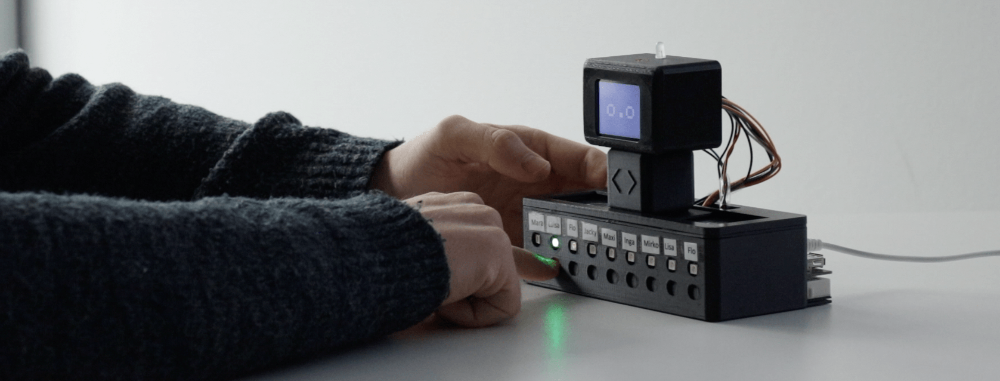

UX/UI Design
Homeoffice Buddy
Why was this project developed?
This project was developed as part of my bachelor's thesis at Capgemini. It was written on the topic of "Communication in Virtual Teams" and revolves around the development of an alternative user interface "Tangible UI"
See Prototype
Abstract
To briefly outline the topic, an insight into the abstract of my work:
"In today's world of work, which is characterised by globalisation and digital transformation, work in virtual teams is becoming increasingly important. However, the relocation of work and social interaction to the digital world has a negative impact on the exchange of knowledge and the networking of employees within a company, and thus on productivity and innovation. Existing communication systems are largely based on graphical user interfaces and limit the possibilities for interaction and the transmission of non-verbal signals. However, interpersonal communication takes place on different levels and involves the human senses.
A solution to this problem could be the development of a communication technology based on interaction with the physical world and addressing the human senses on different levels. One such interaction concept is the tangible user interface (TUI). In this thesis, it will be investigated how and by which influencing factors communication in virtual teams can be positively influenced. The research question is: "How can a communication tool with a tangible user interface enrich communication in virtual teams by creating social presence? To answer the research question, a communication tool with a tangible user interface is developed within the framework of the human-centred design process using user-centred methods and finally evaluated empirically.
In the analysis of the context of use, two challenges for communication in virtual teams emerged. The visibility of responsiveness and the building of deep relationships. The challenges could be solved by the developed communication tool and the influence of the developed TUI on the perception of social presence could be proven. Furthermore, a correlation between the concepts of user experience, media richness and social presence could be established. The development of tangible user interfaces can enrich interpersonal communication. However, the interaction concept can also contribute to finding new solutions to existing problems in other areas of human-computer interaction."
If you would like to see more about the content and the theoretical background of my thesis, just let me know. Otherwise, keep scrolling, the important information is collected here.
Projectinformation
Role: UX Designer
Tools: Figma, Arduino, 3D-Druck, Fusion 360
Timeline: 4 months (2022-2023)
Used methods
Focusgroup/Workshop
"How-Might-We" Questions
Persona
Experience Map
Cluster
MoSCoW Priorisierung
User Journey Map
Prototyping
Usability Testing
Surveys and Questionnaires
Design Process Overview